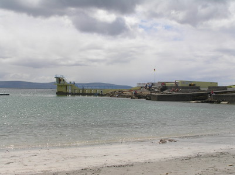

|  | |
| Description |
Located at the end of Salthill's 'prom' this is a great place for people to meet and socialise. There is a covered changing area, diving boards and steps down into the water. When the tide is in Blackrock looks really well and the diving boards can be used. If you are diving do heed the warning signs and the lifeguards. |
| Access | The whole area is concreted and it can be accessed by buggies and wheelchairs. This part of salthill can be very busy during the summer and car parking is often difficult. |
| Facilities | Facilities here are quite good. Along with the changing areas there are modern, pay toilets nearby, which include a disabled toilet. For the hardy there is also an outdoor cold shower. |
Tomás Woods © 2014, All rights reserved.